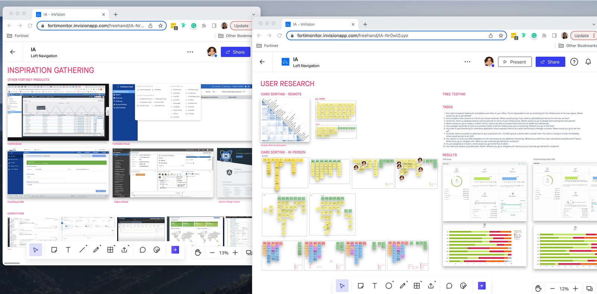
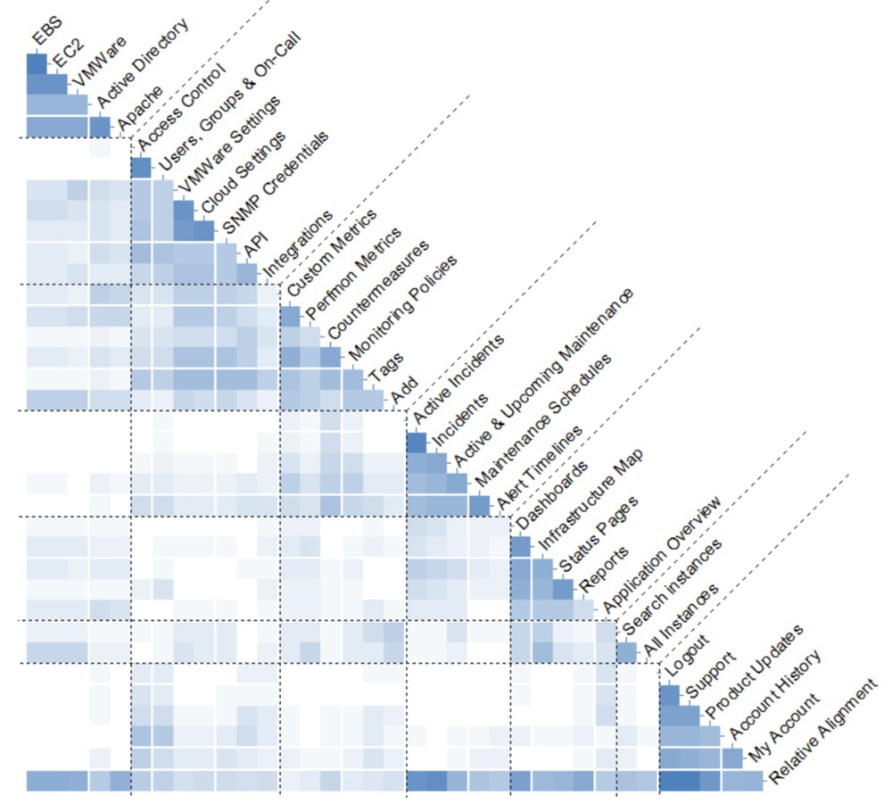
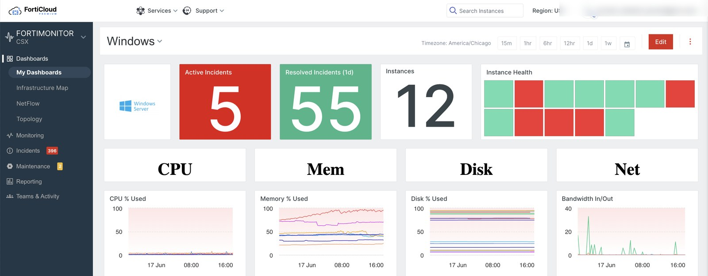
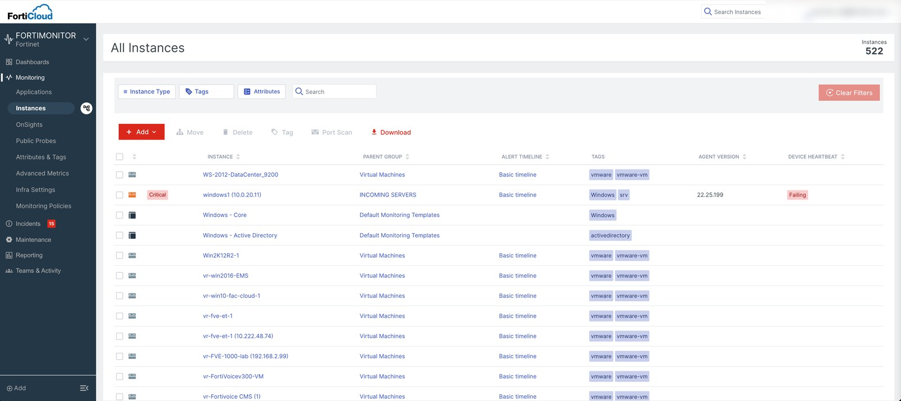
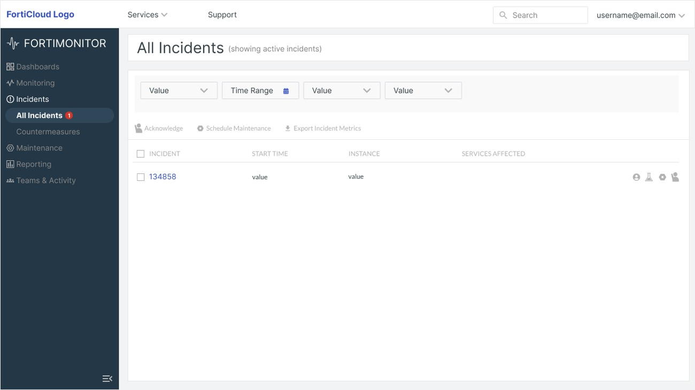
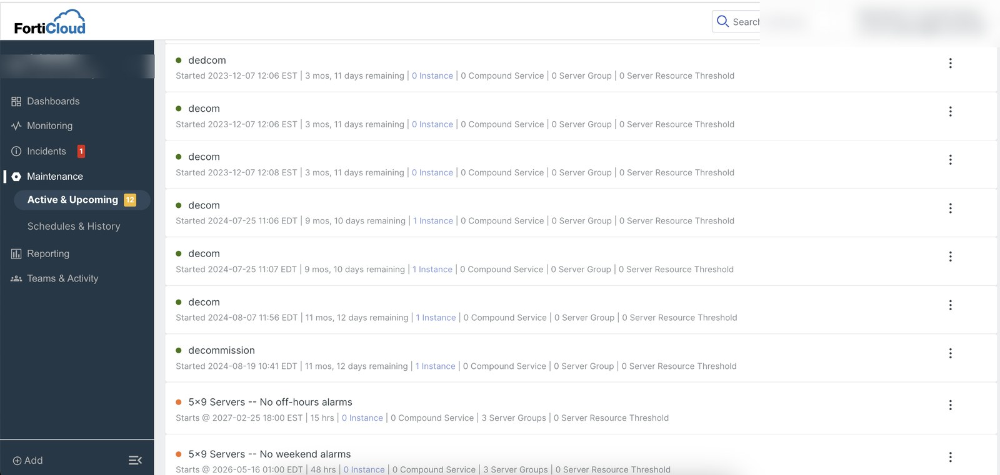
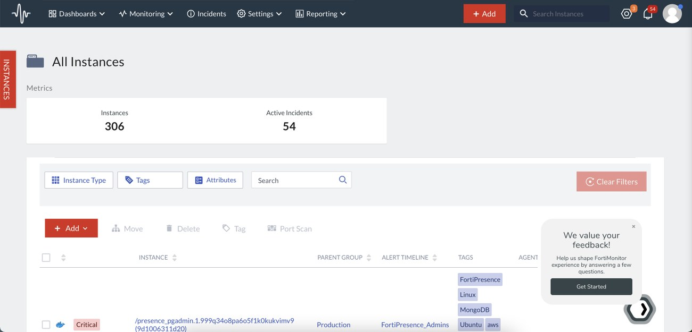
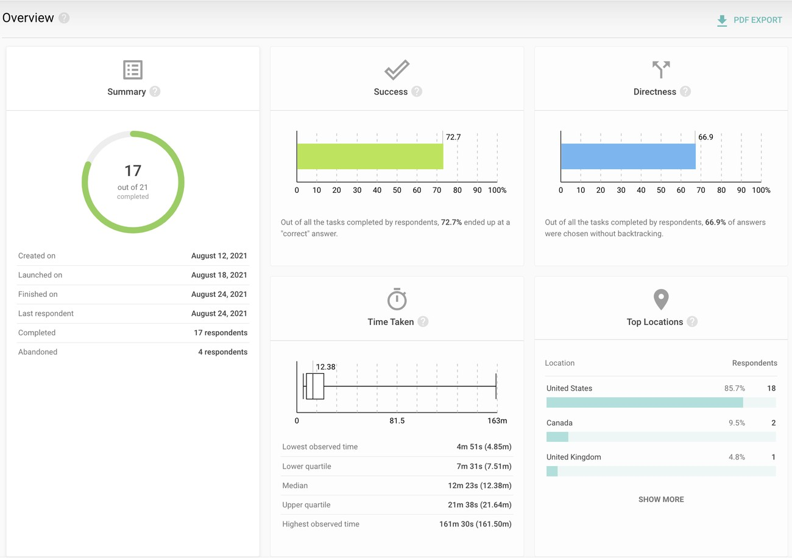
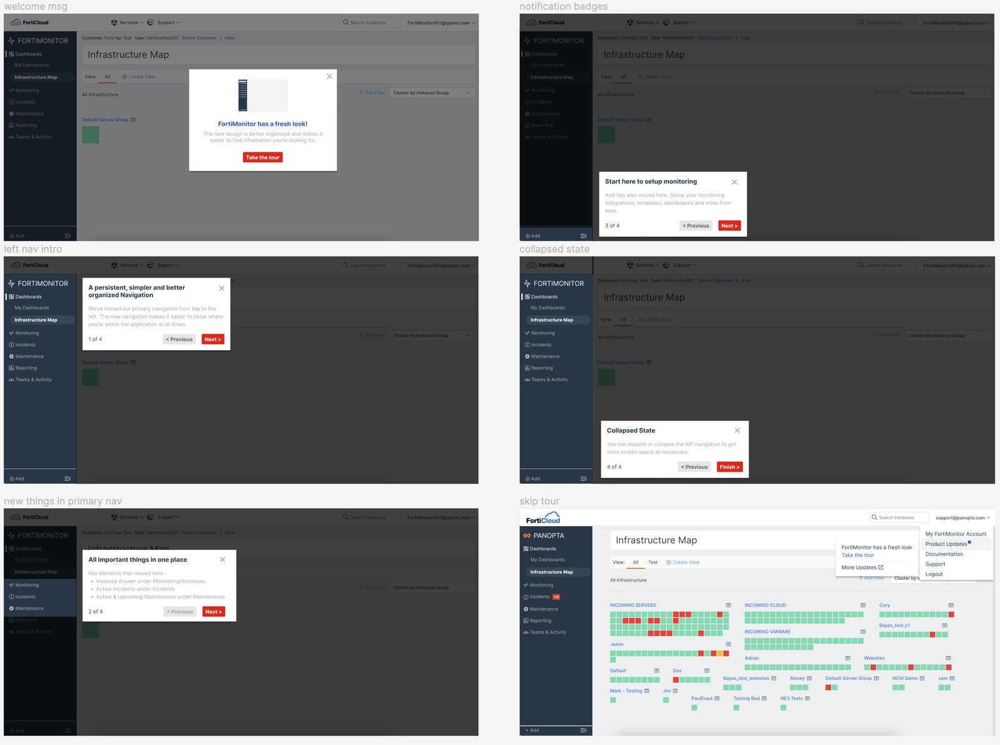

Re-architecting a post-acquisition monitoring platform: reorganizing long, overlapping menus — with items mis-housed far from what they related to — into six task-based destinations, promoting buried workflows into first-class ones so on-call teams get from "something's wrong" to "here's what and where" in seconds.
After Fortinet acquired Panopta, the product had to scale — but navigation was the #1 user complaint: long, overlapping menus, items buried far from what they related to, and a Settings menu swollen into a 13-item junk drawer.
Run IA as a research-led effort, in parallel with the roadmap. Re-architect navigation around what users are trying to do, grounding every call in card sorting and tree testing.
A task-based structure that shipped to enterprise customers — validated with real users through in-product testing, and well received.
FortiMonitor — formerly Panopta — is Fortinet's cloud-based infrastructure and network monitoring platform. It unifies visibility across servers, networks, containers, and applications so enterprises catch performance issues before customers feel them.
After Fortinet acquired Panopta, a Chicago-based monitoring startup, the product needed to evolve from a niche solution into a platform that could integrate seamlessly with the broader Fortinet ecosystem — and grow with an enterprise customer base instead of buckling under it.
The people who live in this product are NOC teams, DevOps engineers, and IT operations teams, often working high-pressure on-call rotations where a slow path to the right signal directly delays incident response. They care about one thing above all: getting from "something's wrong" to "here's what and where" in seconds.
Post-acquisition, the roadmap moved fast. Fabric integration shipped, then FortiCloud IAM, alongside a steady stream of other feature work I was designing at the same time. Navigation was a known, growing pain point throughout — but it was never something the team paused everything to fix in one clean pass.
So I carried the IA work as an ongoing, parallel UX effort. While shipping features on one side, I ran the research for a navigation overhaul on the other — card sorts and tree tests accumulating over time — so that when the revamp landed, it was grounded in evidence and the structure could hold everything the integrations had already added.
Doing it this way was the harder path — foundational IA rarely gets a clean, dedicated slot on the roadmap. But running the research continuously, rather than waiting for a pause that was never going to come, is what let the overhaul land grounded and validated instead of rushed to catch up.
To learn how the product was actually used — and where the roadmap was headed — I immersed myself in both the organizational and the customer perspective before touching structure.
What research consistently returned: users struggled with findability — long menus and cluttered pages made navigation frustrating — and transient navigation left them unsure where they were or where they could go next. That, plus the ambiguity of early post-acquisition ownership, is what the IA had to solve.

The card sort didn't hand me a menu. Its most important read wasn't the clusters themselves — it was their coarseness.
Five broad affinity clusters emerged. But in two places, the sort simply reproduced the confusion I was trying to fix: users lumped everything configurable into one pile — exactly like the old Settings menu had trained them to — and they merged planned maintenance with unplanned incidents. Research told me how users currently think; my job was to decide where that thinking should be honored and where it was an artifact of the broken structure.

Each move is a decision about whether to honor what users grouped or to override it because the grouping was a scar from the old structure.
Tighter sub-groups showed users could separate account, monitoring config, and incident tooling once context was clear — they only piled them together because the product gave them nowhere else to go. Each moved next to what it governs.
They clustered together because both live on a timeline — but maintenance is planned and incidents are unplanned: a different mental mode and urgency. Burying planned downtime inside incident response was part of the original problem.
Users treated live monitoring views and generate-and-share artifacts as one "views & outputs" pile. I honored the distinction they implied: live views anchored Dashboards; things you produce and share became Reporting.
The research gave a clear mandate: users navigate by what they're trying to do, not by how the system is built. They separated looking at their infrastructure from setting up monitoring from responding to incidents — and the old IA violated all three by scattering related tasks across unrelated menus. The worst offender was a global Settings menu that had grown into a 13-item junk drawer.
The old menu listed every user-built dashboard as its own item — growing without limit — while Topology, Netflow, and the Infrastructure Map were buried under Monitoring. I collapsed personal dashboards into a single My Dashboards entry, moved the visualization tools here, and promoted the Infrastructure Map to the landing screen so on-call users see system health the moment they log in.
Tags, Attributes, Custom Metrics, Monitoring Policies, and Cloud/Fabric/VMware settings had been exiled to global Settings, far from what they govern. Monitoring now holds the monitored entities (Applications, Instances, Onsights, Public Probes) alongside the controls that shape them — and I consolidated three separate infrastructure connection settings into a single Infra Settings item.
Countermeasures and Alert Timelines were incident-response tools stranded across Settings and Monitoring. I moved them under Incidents, so everything involved in detecting and resolving an issue lives in one place.
Previously buried as "Maintenance Schedules" under Monitoring, it surfaced in the card sort as its own group every time. I made it a top-level item with Active & Upcoming and Schedules & History, matching how teams actually plan around downtime.
Once each setting moved to its rightful context, what remained was genuinely account-level administration — people, access, integrations, and usage. I renamed and rescoped it to Teams & Activity, reframing it from "everything configurable" to "who's on the team and what they can do."
Alongside the top-level restructure, I reorganized the instance details page — replacing linear tabs with a secondary left-nav that makes the most-used page faster to act on — and moved from lo-fi sketches into mid-fi prototypes, sharing weekly builds with engineering to keep design decisions inside what was technically feasible.




Before finalizing, I embedded a usability-testing widget directly inside FortiMonitor to recruit real customers, so people could test the new navigation in their own environment — broader, more representative feedback on findability, labels, and hierarchy than a lab study would give. I validated the redesign through a mix of moderated and unmoderated sessions and tree testing, then iterated on what they surfaced.
In tree testing of the proposed structure, task success reached 72.7% and path directness 66.9% (17 of 21 respondents completed) — confirming the task-based model was easier to navigate and flagging the labels worth refining before launch.


The redesigned, task-based navigation shipped to FortiMonitor's enterprise customers on the Neutrino design system.
Tree testing confirmed the task-based structure made top tasks easier to locate — and pointed to the spots worth refining before launch.
Testing the wording of destinations and items surfaced clearer terms, so the navigation reads the way users describe their own work.
Moderated and unmoderated sessions validated what users expect to see first, shaping the final hierarchy of the new dashboard and nav.
And it landed well with the people who live in the product:
"The GUI for FortiMonitor has changed and it looks amazing." 👌
"View is immersive." 😊
"The left nav is gorgeous — 10 out of 10, would navigate again."
"Really enjoying the FortiMonitor UI improvements."
To land the change, I partnered with six front-end engineers and the EM through execution — providing design specs, reviewing builds, supporting QA against the Neutrino design system, and designing an in-app announcement and guided walkthrough (via Pendo) so existing users were onboarded into the new structure rather than surprised by it.

The card sort's real value was showing me where users' groupings were genuine mental models and where they were scars from the broken product. Deciding which to honor and which to override was the actual design work — the data was the input, not the answer.
The IA overhaul never got a dedicated slot on the roadmap — it ran in parallel with integrations and a stream of other feature work. Carrying the research continuously, instead of waiting for a pause that wasn't coming, is what let the revamp land grounded and validated rather than rushed.
Consolidating three connection settings into one scalable Infra Settings item was about the next five integrations — Meraki, Nutanix, third-parties — as much as the current three. Good IA leaves room for what you can't name yet.
The 13-item Settings menu wasn't a labeling problem; it was an ownership problem. Once every item was re-housed next to the thing it configures, "Settings" almost dissolved on its own into a clean, account-level home.